课程目标
- HTML的发展史
- 新的文档类型声明(DTD)
- 新增的HTML5标签
- 删除的HTML标签
- 重新定义的HTML标签
- 崭新新的页面布局
- Html5浏览器的兼容
一、HTML5简介
1、HTML5的发展历史
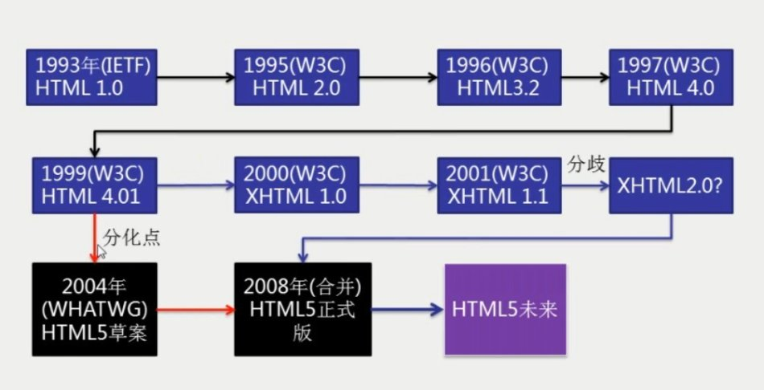
2、HTML5的支持浏览器
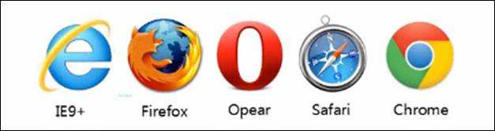
Trident gecko presto webkit webkit blink(opera\chrome\2013)
不同的浏览器显示的效果可能不一样。因为HTML5没有一个统一的标准，不同的浏览器解析时不一样的，现在还处于一个推广的阶段，但是大部分的是一样的.
3、HTML5的特点
增加了新特性：语义特性，本地存储特性，设备兼容特性，连接特性，网页多媒体特性，三维、图形及特效特性，性能与集成特性，CSS3特性。
二、Html5新标签
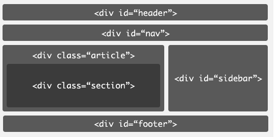
语义化
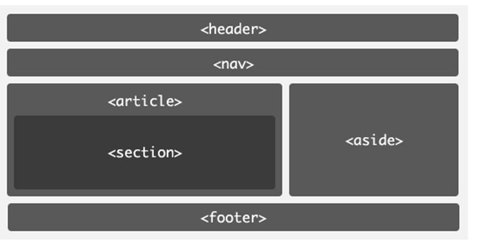
1、<header>
<header>标签定义文档的页眉，通常是一些引导和导航信息。通常<header>标签至少包含（但不局限于）一个标题标记（<h1>-<h6>），还可以包括<hgroup>标签，还可以包括表格内容、标识、搜索表单、<nav>导航等。
<header> 标签不能被放在 <footer>、<address> 或者另一个 <header> 元素内部，但它不局限于写在网页头部，也可以写在网页内容里面。
2、<nav>
作为页面导航的链接组，其中的导航元素链接到其它页面或者当前页面的其它部分。在语义化方面更加精确，同时对于屏幕阅读器等设备支持更好（简而言之，就是导航栏）
3、<main>
在一个文档中，不能出现一个以上的 <main> 元素。<main> 元素不能是以下元素的后代：<article>、<aside>、<footer>、<header> 或 <nav>。
4、<article>
比section具有更明确的语义，它代表一个独立的、完整的相关内容块，可独立于页面其它内容使用。例如一篇完整的论坛帖子，一篇博客文章，一个用户评论等等。一般来说，article会有标题部分（通常包含在header内），有时也会包含footer。article可以嵌套，内层的article对外层的article标签有隶属关系。例如，一篇博客的文章，可以用article显示，然后一些评论可以以article的形式嵌入其中。
5、<section>
<section>
标签定义了文档的节。比如章节、头部、底部或者文档的其他区域，它表示一段专题性的内容，通常由内容及其标题组成。区块
6、<aside>
用来装载非正文的内容，被视为页面里面一个单独的部分。它包含的内容与页面的主要内容是分开的，可以被删除，而不会影响到网页的内容、章节或是页面所要传达的信息。例如广告，成组的链接，侧边栏等等。（广告，文章的链接，作者的简介）
7、<footer>
眉脚一般会包含作者姓名、文档版权信息、使用条款链接、联系信息等. （可多个）
8、<hgroup>
<hgroup> 标签用于对网页或区段（section）的标题进行组合。
9、<figure>、<figcaption>
<figure>用于对元素进行组合。一般用于图片，文字组合。
<figcaption>是 figure的子元素，用于对figure的内容进行说明
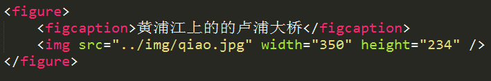
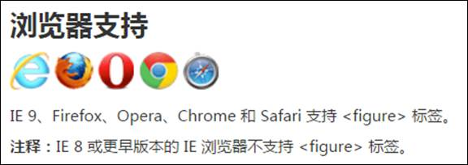
10、<time>
用来表现时间或日期
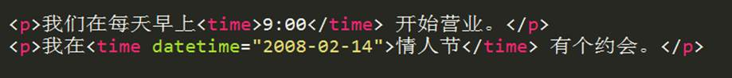
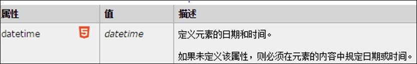
datetime 属性在所有浏览器中不会渲染任何特殊的效果。
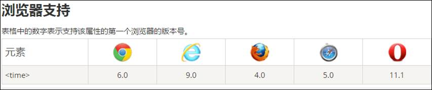
11、<datalist>
与<input>配合,实现类似于拥有输入功能的下拉列表。<input> 元素的 list 属性来绑定 <datalist>
元素。
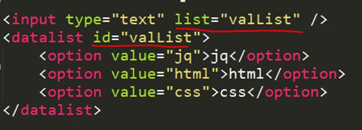
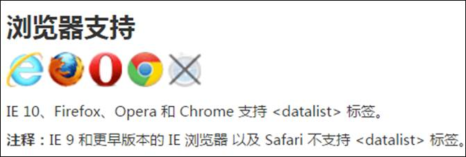
12、<details>
用于描述文档或文档某个部分的细节。
<summary> 可以为<details>定义标题。标题可见，用户点击标题时，会显示出 details中的内容。任何形式的内容都能被放在 <details> 标签里边。
open属性,规定 details中内容是否默认可见。<details
open="open">

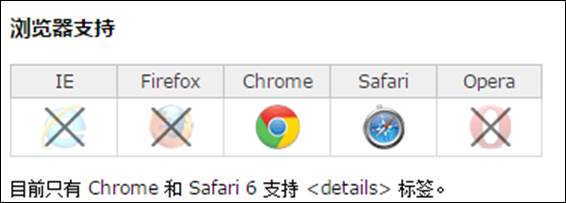
13、<mark>
定义带有记号的文本，在需要突出显示文本时使用 <mark> 标签。
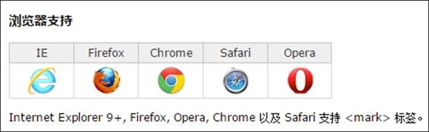
14、<progress>
定义进度条

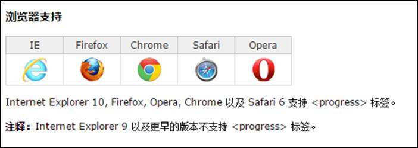
15、<meter>
度量尺
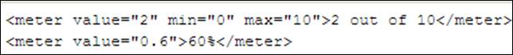
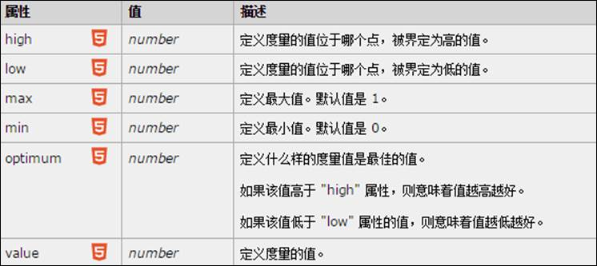
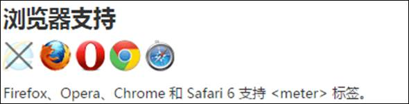
16、注释标签
<ruby> 标记定义 注释或音标
<rt> 标记定义对ruby的注释内容文本
<rp> 告诉那些不支持 Ruby元素的浏览器如何去显示
17、<output>
<output> 标记定义一些输出类型,计算表单结果配合oninput事件
<form oninput="res.value=no1.value*no2.value”
>
<input
type="text" name="no1">
<input
type="text" name="no2">
<output
name="res"></output>
</form>
18、语义化标签兼容IE8-6
1.可以引用一个js插件解决HTML5语义化标签在IE6-8不兼容问题。
<!--[if lt IE 9]-->
<script src="路径 /html5.js"></script>
<!--[endif]-->
2.HTML5在默认情况下表现为内联元素，对这些元素进行布局我们需要利用CSS手工把它们转为块状元素方便布局
<style>
article,
aside, canvas, details, figcaption, figure,
footer, header, hgroup, menu, nav, section,
summary
{
display:
block;
}
</style>
下载地址：http://www.bootcdn.cn/html5shiv/
三、删除的HTML标签
纯表现的元素：
basefont，big，center，font, s，strike，tt，u；
对可用性产生负面影响的元素：
frame，frameset，noframes；
产生混淆的元素：
acronym
，applet，isindex，dir。
重新定义的HTML标签（语义化）
|
HTML元素 |
HTML5中的意义 |
|
<b> |
代表内联文本，通常是粗体，没有传递表示重要的意思 |
|
<i> |
代表内联文本，通常是斜体，没有传递表示重要的意思 |
|
<dd> |
可以同details与figure一同使用，定义包含文本，dialog也可用 |
|
<dt> |
可以同details与figure一同使用，汇总细节，dialog也可用 |
|
<hr> |
表示主题结束，而不是水平线，虽然显示相同 |
|
<menu> |
重新定义用户界面的菜单，配合commond或者menuitem使用 |
|
<small> |
表示小字体，例如打印注释或者法律条款 |
|
<strong> |
表示重要性而不是强调符号 |
四、表单新增输入类型
1、color 颜色选择器（卖油漆）
2、email
email 输入类型用于应该包含电邮地址的输入字段。当提交表单时，会自动地对 email 字段的值进行验证。（正则）
3、number 只能包含数字的输入框
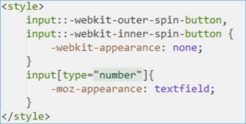去掉number类型的上下箭头。
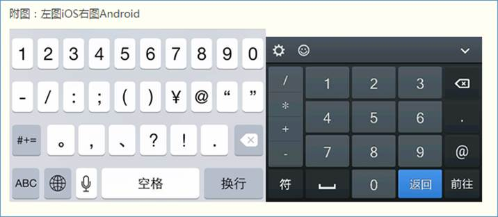
4、tel 电话号码，移动端会弹出数字键盘
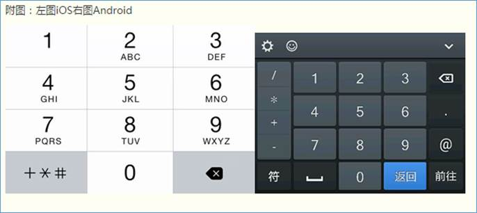
5、url 网页的URL，会在提交表单时对 url 字段的值自动进行验证。
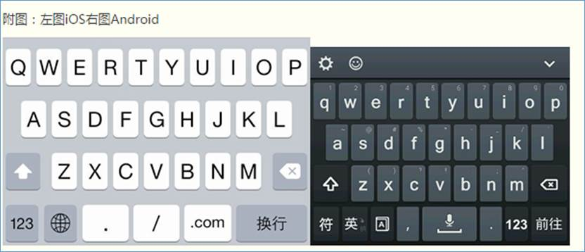
6、search 搜索
配合results="n"属性
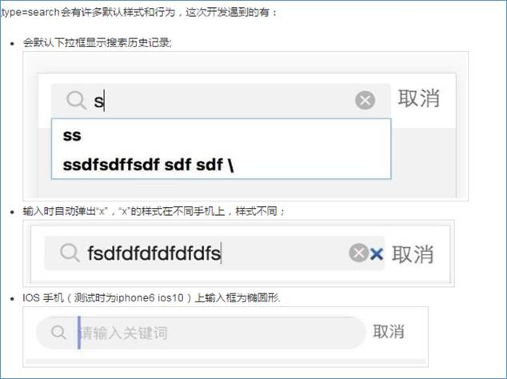
7、range
特定范围内的数值选择器，min、max、step( 步数 )、value
https://my.oschina.net/pauli/blog/270635
-----------------------------------------------------------------------------------------------------------------------
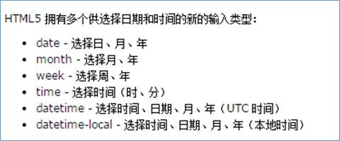
8、date、month、week 显示日期
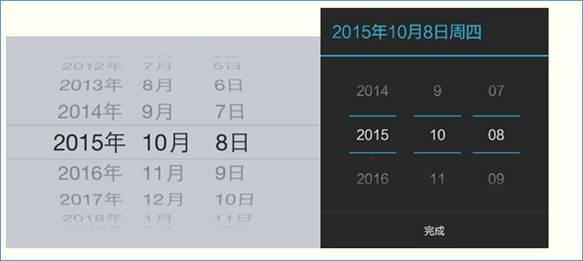
9、time 显示时间
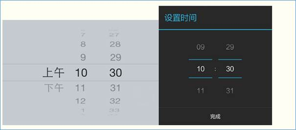
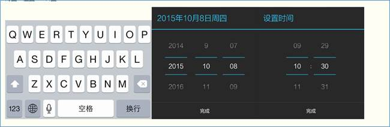
五、表单新增属性
placeholder 占位符
autofocus 获取焦点
<input type="text" name="userName" placeholder="请输入姓名" autofocus/>
<!-- 只有设置了name属性的表单元素的值才会提交到服务器-->
multiple 文件上传多选或多个邮箱地址
<!-- file :文件选择表单控件-->
<input type="file" name="photo" multiple/>
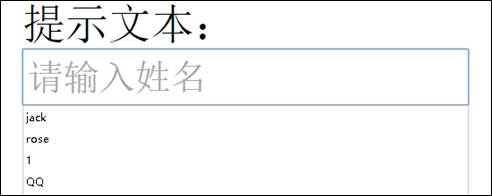
required 验证条件，必填项
<input type="text" name="phone" required >
</form>
Pattern 正则表达式
输入的内容必须匹配到指定正则 例如： pattern="\d{3}"